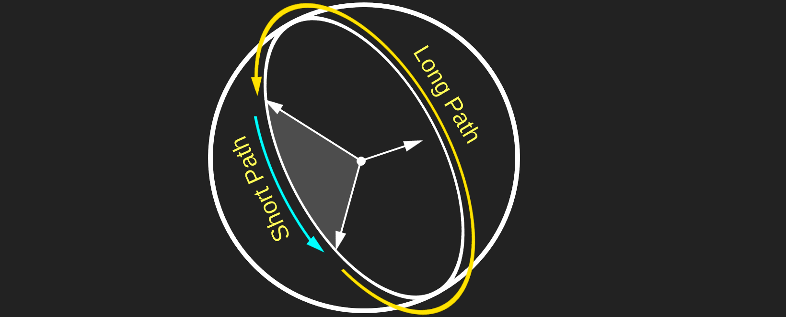

Neighborhood
When interpolating between two quaternions, the interpolation can take the shortest or the longest arc between the two. Think of two vectors on the surface of a sphere, there are two ways to rotate from one vector to another. Both paths lie on a plane that contains both vectors and the center of the sphere. One has a shorter arc, the other has a longer arc; shown in the image below
In 3D space this affects which direction an object rotates. If you've ever seen a game where the elbow of a character is bending wrong but has the corret motion chances are it's a neighborhooding issue. The gif in the image below removed neighborhood checks from the animation code to catch a few frames of the leg bending wrong.

Neighborhooding refers to testing if the interpolation path between two quaternions is the long way or the short way. To test if two quaternions are in the same neighborhood, take their dot product. If the dot product is negative, the longer interpolation path is being taken. Ideally, we want to adjust the interpolation somehow to always take the shortest arc. Fliping which arc is taken is easy, we just have to negate the target quaternion.
Quaternion Interpolate(Quaternion a, Quaternion b, float t) {
if (dot(a, b) < 0.0f) {
b = Negate(b);
}
return NLerp(a, b, t);
}